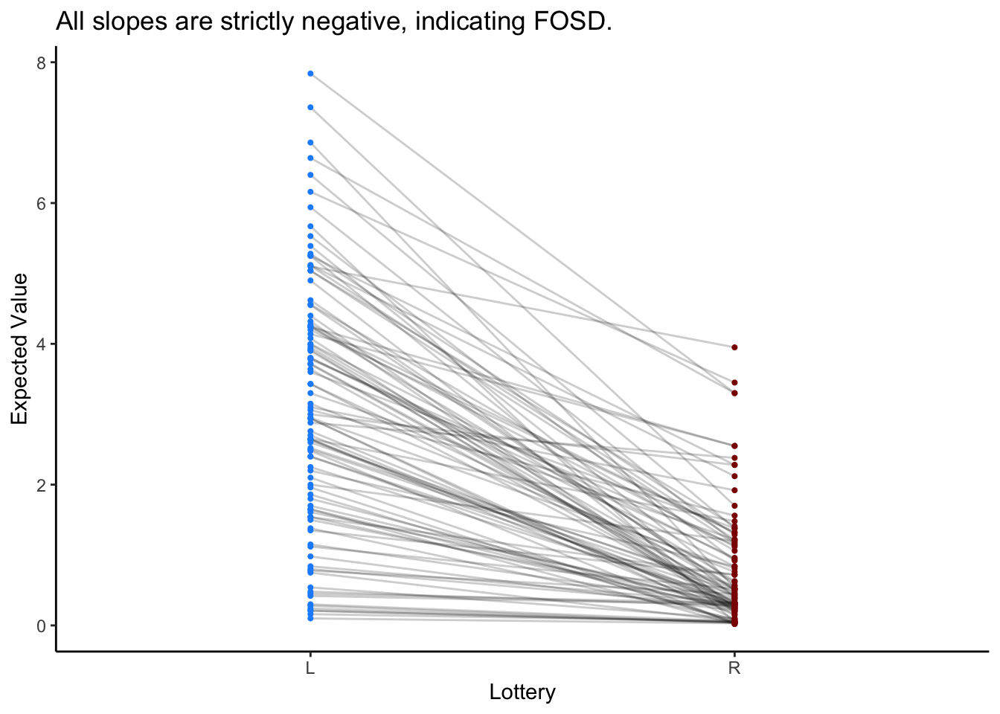
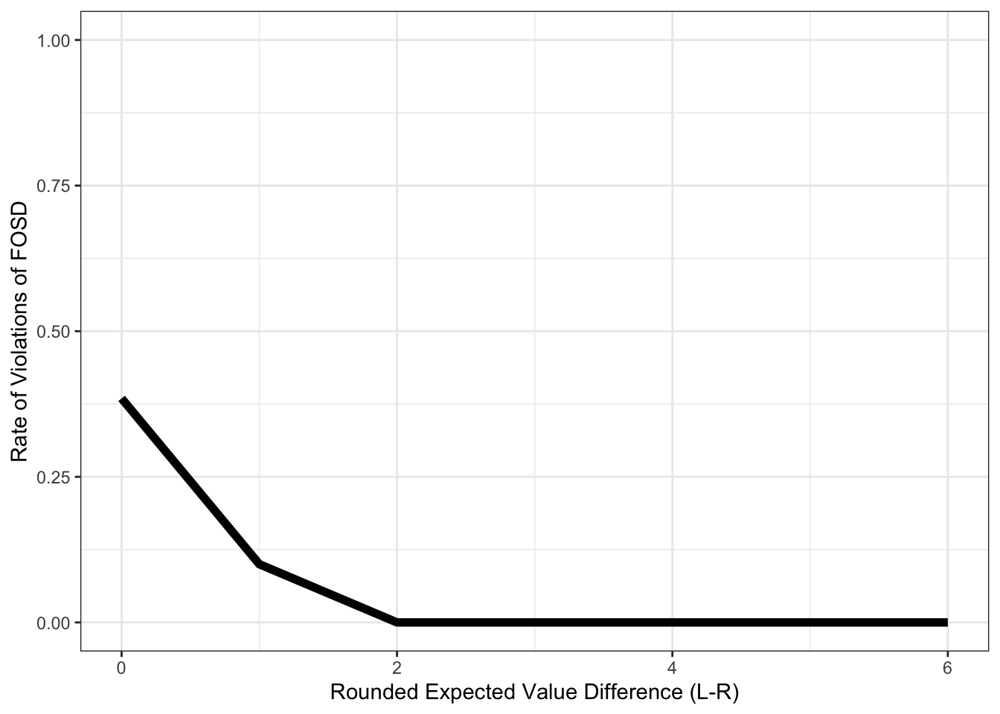
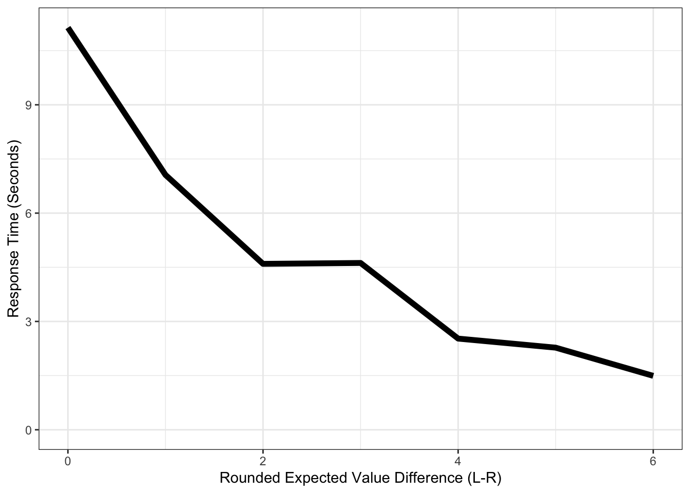

Chapter 5 DDM & First-Order Stochastic Dominance
5.1 The DDM Can Explain Violations of First-Order Stochastic Dominance
Author: Brenden Eum (2024)
This notebook is for Charly Hervy at UPF in Barcelona. She finds that some of her subjects violate first-order stochastic dominance (FOSD) in a risky choice task.
I argue that this can be modeled by the Drift-Diffusion-Model (DDM) from cognitive neuroscience. It is one of the most famous models to come out of this literature, cited in literally over a million papers (also goes by “Diffusion Decision Model”, so named by members of the Psychology and Economics departments at OSU). The model considers the speed-accuracy trade-off in decisions, and therefore requires data on both choices and response times. Larbi might like this idea since he has a working paper on response times, I believe. The intuition behind the model is this: (1) If two options are similarly valued, the decision is hard, takes more time, and is made with a higher error rate. (2) As the difference in value between the two options grows, the decision becomes easier, takes less time, and is made with a lower error rate. There is an element of stochasticity in choices that originates from evidence in neuroscience, but is implemented in a very simple manner in the DDM. This stochasticity is the source of errors in decisions, and is one of TWO features of the DDM that may explain violations of FOSD. I’ll only focus on this feature here. Patrick is aware of the model too, so I’m sure he can help if I failed to clearly explain the intuition here.
In the past, the DDM (and the class of models it belongs to called “sequential sampling models”) has been used to explain preference reversals, violations of transitivity, non-linear probability reweighting, etc. (Tsetsos et al. 2012, Testsos et al. 2016, Zilker and Pachur 2022). While I’m not alone in thinking that it can be used to explain violations of FOSD, nobody has actually collected data to test this (I asked around to see if it had been done).
I think (a) the DDM may offer a potential explanation of your data, and (b) your experiment may offer something novel for the DDM literature. If you add a paragraph or small section on response time patterns, expected value differences, and the DDM, I can spread the word to all the sequential sampling modelers + neuroeconomists, and you may get citations from the psychology and neuroscience fields too!
5.2 Preamble
## ── Attaching core tidyverse packages ──────────────────── tidyverse 2.0.0 ──
## ✔ forcats 1.0.0 ✔ stringr 1.5.1
## ✔ lubridate 1.9.3 ✔ tibble 3.2.1
## ✔ purrr 1.0.2 ✔ tidyr 1.3.1
## ✔ readr 2.1.5
## ── Conflicts ────────────────────────────────────── tidyverse_conflicts() ──
## ✖ data.table::between() masks dplyr::between()
## ✖ gridExtra::combine() masks dplyr::combine()
## ✖ tidyr::extract() masks runjags::extract()
## ✖ dplyr::filter() masks stats::filter()
## ✖ data.table::first() masks dplyr::first()
## ✖ lubridate::hour() masks data.table::hour()
## ✖ lubridate::isoweek() masks data.table::isoweek()
## ✖ dplyr::lag() masks stats::lag()
## ✖ data.table::last() masks dplyr::last()
## ✖ lubridate::mday() masks data.table::mday()
## ✖ lubridate::minute() masks data.table::minute()
## ✖ lubridate::month() masks data.table::month()
## ✖ lubridate::quarter() masks data.table::quarter()
## ✖ lubridate::second() masks data.table::second()
## ✖ MASS::select() masks dplyr::select()
## ✖ purrr::transpose() masks data.table::transpose()
## ✖ lubridate::wday() masks data.table::wday()
## ✖ lubridate::week() masks data.table::week()
## ✖ lubridate::yday() masks data.table::yday()
## ✖ lubridate::year() masks data.table::year()
## ℹ Use the conflicted package (<http://conflicted.r-lib.org/>) to force all conflicts to become errors##
## Attaching package: 'patchwork'
##
## The following object is masked from 'package:MASS':
##
## area5.3 DDM Simulation Function
Simulate the DDM for a single trial. Simulation will stop and report NA if subject takes longer than 2 minutes for a single trial
simulate_ddm <- function(evidence, a = 1.0, d = 0.001, s = 0.03, b = 0.0, c = 0.0, ts_size = 10, rt_max = 120000) {
bounds = a
rdv_t = b
inside_bounds = T
timestep = 0
while(inside_bounds==T & timestep<(rt_max/ts_size)) {
rdv_t = rdv_t + d * evidence
rdv_t = rdv_t + rnorm(1, 0, s)
timestep = timestep + 1
if (abs(rdv_t)>=bounds) {inside_bounds = F}
rdv_t_1 = rdv_t
}
if (rdv_t >= bounds) {choice = 1}
if (rdv_t <= bounds) {choice = 0}
rt = timestep * ts_size
if (rt >= rt_max) {choice = NA}
return(list(choice=choice, rt=rt))
}5.4 Lotteries
Generate vectors of lotteries. Lottery L will FOSD Lottery R.
L_prb = sample(c(2:99), 100, replace=T)/100
L_amt = sample(c(5:8), 100, replace=T)
R_prb = rep(NA, 100)
R_amt = rep(NA, 100)
for (i in 1:100) {
R_prb[i] = sample(c(1:(L_prb[i]*100-1)), 1, replace=T)/100
R_amt[i] = sample(c(1:(L_amt[i]-1)), 1, replace=T)
}5.4.1 Expected Value
There are different ways to compare the lotteries. (Not Recommended) Since the DDM is a sequential sampling model, the order in which information (attribute values) enter into the decision process matters (Yang and Krajbich 2023, Fisher 2021). That being said, this would require eye-tracking and a whole bunch of other assumptions, so it may not be the simple explanation you’re looking for. (Recommended) You can just compare the expected values of the lotteries (Eum et al. 2024).
pdata = data.frame(L_lottery = "L", L_ev = L_prb*L_amt, R_lottery = "R", R_ev = R_prb*R_amt)
ggplot(pdata) +
geom_segment(aes(x = L_lottery, xend = R_lottery, y = L_ev, yend = R_ev), color = "black", size = .5, alpha = .2) +
geom_point(aes(x = L_lottery, y = L_ev), color = "dodgerblue", size=.75) +
geom_point(aes(x = R_lottery, y = R_ev), color = "darkred", size=.75) +
theme_classic() +
labs(y = "Expected Value", x = "Lottery", title = "All slopes are strictly negative, indicating FOSD.")
5.5 Single Agent Simulations
5.5.1 Single Agent
Take a single DDM agent with default parameters. What is the rate at which they violate FOSD?
single_agent = data.frame()
evidence = pdata$L_ev - pdata$R_ev
for (i in 1:length(evidence)) {
single_trial = simulate_ddm(evidence[i]) %>% data.frame()
single_trial$evidence = evidence[i]
single_agent = bind_rows(single_agent, single_trial)
}
# Some cleaning
single_agent$rnd_evid = single_agent$evidence %>% round()
single_agent$error = ifelse(single_agent$choice==1, 0, 1)5.5.2 Expected Value Differences and Error Rate
pdata.error_ev = single_agent %>%
group_by(rnd_evid) %>%
summarize(error = mean(error))
ggplot(pdata.error_ev, aes(x=rnd_evid, y=error)) +
geom_line(size = 2) +
theme_bw() +
labs(y = "Rate of Violations of FOSD", x = "Rounded Expected Value Difference (L-R)") +
coord_cartesian(ylim=c(0,1))
5.5.3 Response Times and Value Differences.
It’s well established in the literature that response times will increase as Expected Value Differences go to 0 (see Forstmann et al. 2016 for a great review). This is typically replicated in every dataset that wants to explain data with DDM since it’s so robust. Think of it as a sanity check that the model can be applied to this data.
pdata.rt_ev = single_agent %>%
group_by(rnd_evid) %>%
summarize(rt = mean(rt)/1000)
ggplot(pdata.rt_ev, aes(x=rnd_evid, y=rt)) +
geom_line(size = 2) +
theme_bw() +
labs(y = "Response Time (Seconds)", x = "Rounded Expected Value Difference (L-R)") +
coord_cartesian(ylim=c(0,NA))
5.6 Multi-Agent Simulations
5.6.1 Distributions of agents
Suppose we have N agents who make decisions using DDM. Draw their parameters from some reasonable distribution, given previous literature. I’ll work off of my last paper (Eum et al. 2023).
This may take a few seconds to a minute depending on your computer.
N = 100
multi_agent = data.frame()
for (n in 1:N) {
# Together, the drift rate and noise determine signal-to-noise ratio in this decision process.
d = runif(1, min=0.0001, max=0.009) # drift rate
s = runif(1, min=0.01, max=0.09) # noise
agent_n = data.frame()
for (i in 1:length(evidence)) { # Evidence vector is same as in above cells.
single_trial = simulate_ddm(evidence[i], d=d, s=s) %>% data.frame()
single_trial$evidence = evidence[i]
agent_n = bind_rows(agent_n, single_trial)
}
# Some cleaning
agent_n$n = n
agent_n$rnd_evid = agent_n$evidence %>% round()
agent_n$error = ifelse(agent_n$choice==1, 0, 1)
# Combine into placeholder
multi_agent = bind_rows(multi_agent, agent_n)
}5.6.2 Expected Value Differences and Error Rate
This is the main dish. What you came to see. ARE YOU NOT ENTERTAINED?! It works!!!
Let’s plot the mean and standard deviation across the MEANS of the agents.
pdata.multi_error_ev = multi_agent %>%
group_by(n, rnd_evid) %>%
summarize(error = mean(error, na.rm=T)) %>%
group_by(rnd_evid) %>%
summarize(
sd = sd(error, na.rm=T),
error = mean(error, na.rm=T)
)## `summarise()` has grouped output by 'n'. You can override using the
## `.groups` argument.ggplot(pdata.multi_error_ev, aes(x=rnd_evid, y=error)) +
geom_line(size=1.5) +
geom_errorbar(aes(ymin = pmax(error-sd,0), ymax=error+sd), width=0, size=1.5) +
theme_bw() +
labs(y = "Rate of Violations of FOSD (SD Errorbars)", x = "Rounded Expected Value Difference (L-R)") +
coord_cartesian(ylim=c(0,1))